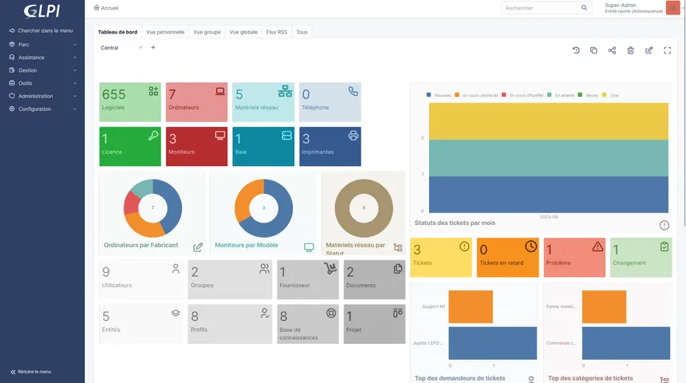
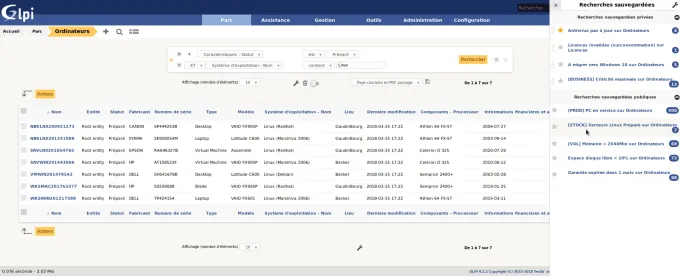

🔍 Contexte du Projet
L'objectif était d'implémenter une solution de gestion de parc informatique et de Service Desk centralisée. Cette mission a nécessité l'inventaire complet des équipements (serveurs, postes, éléments réseaux) et la structuration des catégories d'incidents afin d'organiser et d'optimiser le support technique de la M2L.

Interface de gestion de parc💻 L'objectif
Le défi majeur était de mettre en place une solution de Ticketing efficace, permettant aux utilisateurs de déclarer facilement leurs incidents et aux techniciens de suivre la résolution de manière transparente.
Résultat : une traçabilité complète des interventions, une meilleure gestion des priorités et une réduction significative du temps de traitement des demandes de support

Interface de gestion de ticketsLivrable Technique
Consultez la procédure complète d'installation et les schémas réseau détaillés du projet.
📂 Ouvrir la Procédure (PDF)